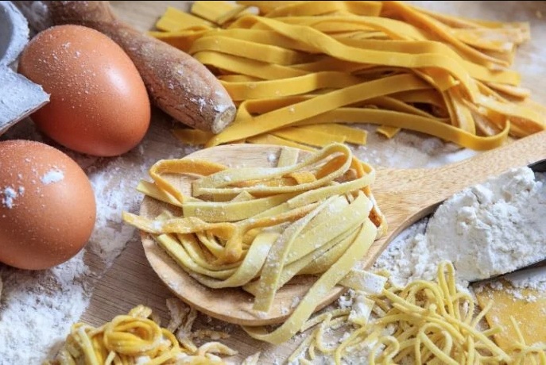

Tagliatelle

Description
Making fresh pasta at home is an ancient art: from the dough rolled out with a rolling pin you can make golden wide noodles like tagliolini or tagliatelle,
stuffed like ravioli or tortellini and timeless lasagna. Even today we are going back to trying our hand at fresh homemade pasta, a genuine product made
with our own hands that is priceless!
If you do the math, then, it doesn't take long to prepare a good fresh pasta: 15-20 minutes for a nice smooth and elastic dough, 30 minutes of rest,
15 minutes to roll out and make the dough... in about an hour you're done! We started from the classic proportion 100 g of flour to one egg,
but a lot depends on what shape you want to prepare.
So, one of the most valuable general tips is to keep a little of the amount aside and add as needed.
Ingredients (4 people)
- Eggs: 4 (at least 70g each)
- Flour: 400g
Steps
- Pour a little less than 400g of flour onto a wooden pastry board (it's best to keep a bit aside to add if necessary).
Make a crater in the middle and add the whole eggs while stirring with a fork and mixing it with the flour.
- Once the liquid part has been absorbed, start kneading by hand. If you used a bowl, transfer the dough to the wooden pastry board.
Knead there vigorously for about 10 minutes, using the palm and pulling it in al directions, but taking care not to tear it.
- Once the dough is smooth, wrap it in plastic wrap and let it rest at room temperature for at least 30 minutes.
Then remove the plastic and cut a piece, taking care of putting the rest in the wrap so it doesn't dry out.
Flour the piece and pull it with the sheet maker at maximum thickness and pass the dough between the rollers to obtain a thick first sheet.
Fold the two short edges of the sheet towards the center and then dust again with a little flour and pass it again between the rollers.
-
Keep repeating until you achieve the desired thickness, then cut it around 1 cm wide or less. Good job, the pasta is ready to be cooked!